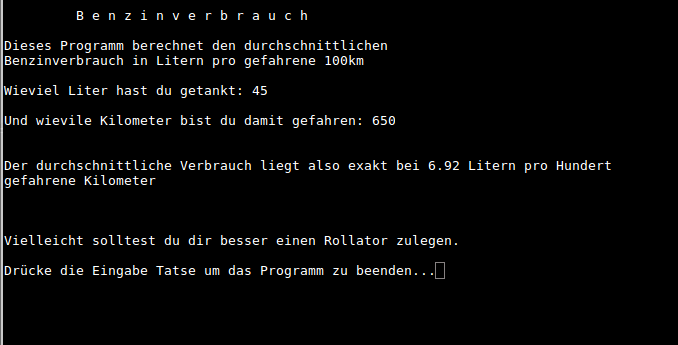

Mein erstes Programm in C geschrieben
Nach der berühmten** Hello World **Übung, war dies mein erstes C’ Programm fürs Terminal, welches im Prinzip aus dem includieren zweier Bibliotheken und dem Aufruf von 2 Funktionen bestanden hat.
Nämlich einer Ein - sowie einer Ausgabe- Funktion.
Hintergrund dieser Programmierübung
Da ich mir zum damaligen Zeitpunkt einen relativ jungen Gebrauchtwagen gekauft hatte, ging es eigentlich nur darum zu erfahren was die Karre pro 100 Km so an Sprit verzehrt.
Auf die Real-Time Berechnungen des Bord-Computers kann man getrost verzichten. Denn die Information, das der Wagen im Moment nur 0.6 Liter verbraucht, während man auf der Landstraße gerade einen Berg mit 7 Prozent Gefälle hinunterfährt, ist purer Schwachsinn.
Folgendes Szenario. Der Tank, welcher komplett leergefahren ist, wird mit exakt 45 Liter neu befüllt. Mit diesem Tankinhalt fahre ich täglich immer wieder exakt die selbe Strecke (zur Arbeit) und zwar so lange, bis der Tank wieder leer ist, bzw. bis die Tank- warn - anzeige anfängt zu Piepsen. In dicht besiedelten Gebieten fährt man alle 2 bis 5 km an einer Tankstelle vorbei, also sollte dies kein Problem darstellen.
Jedenfalls waren das genau 650 Km gewesen, bis die Tankanzeige wieder zu Piepsen begann.
Als Lektüre käme jetzt am Taschenrechner der klassische Dreisatz zum Einsatz
Mit spaßigen Kommentaren habe ich das Progrämmchen etwas aufgehübscht.
#include <stdio.h>
#include <iostream>
int main ()
{
float liter, kilometer;
printf("\n\t B e n z i n v e r b r a u c h\n");
printf("\nDieses Programm berechnet den durchschnittlichen\n");
printf("Benzinverbrauch in Litern pro gefahrene 100km\n");
printf("\nWieviel Liter hast du getankt: ");
scanf("%f", &liter);
printf("\nUnd wievile Kilometer bist du damit gefahren: ");
scanf("%f", &kilometer);
printf("\n\nDer durchschnittliche Verbrauch liegt also exakt bei %.2f Litern pro
Hundert\ngefahrene Kilometer\n\n", liter*100/kilometer);
printf("\n\nVielleicht solltest du dir besser einen Rollator zulegen.\n\n");
// das folgende std gedönse wartet auf die Enter Taste. Erst nachdem diese gedrückt
wurde wird das Programm beendet ;
std::cin.ignore(1024, '\n');
std::cout << "Drücke die Eingabe Tatse um das Programm zu beenden...";
std::cin.get();
// Ende mit auf Enter Taste warten gedönse;
return 0;
printf("\n\n");
}
Nach dem Compilieren zu einer ausführbaren Binär- Datei, sah das ganze dann so aus.

Der Durschschnittsverbrauch pro 100 km lag also etwas knapp unter 7 Liter. Für einen knapp 1.1 Tonnen schweren Wagen mit 74 Kw Leistung unterm Blech, bewegt sich der Spritverbrauch gerade noch so im Rahmen des erträglichen.